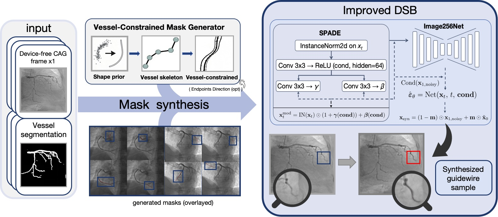
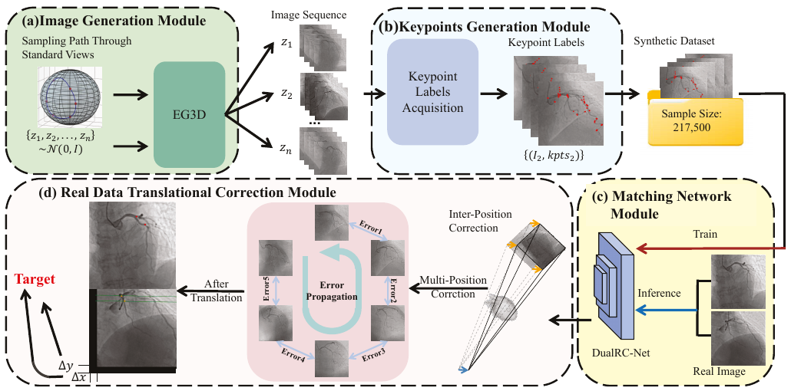

Research / Tianjin University
Jialin Li李佳林
Generative modeling.
I am a PhD student in Information and Communication Engineering at Tianjin University . I study how generative models can produce controllable, structured synthetic data that supports learning when real data is limited.
My work spans geometry-constrained image editing, optimal transport and Schrödinger bridges, and model information discrepancy. Medical imaging provides a demanding setting for much of my work so far.
Generative models Synthetic data Model understanding
lijialin_3737@tju.edu.cn ↗
ICML 2026 First author Controllable image editing
Jialin Li , Zhuo Zhang, Yue Cao, Guipeng Lan, Jiabao Wen, Shuai Xiao, Jiachen Yang
Geometry-constrained image editing through entropic optimal transport and a guided Schrödinger bridge. Synthetic augmentation improves detection on held-out real angiograms.

MICCAI 2026 Co-author Structured data synthesis
Haoyuan Tang, Zhuo Zhang, Jialin Li , Shuai Xiao, Jiachen Yang
Controllable device synthesis with anatomical constraints and paired endpoint labels. Synthetic pre-training supports downstream endpoint localization.

AAAI 2026 Co-author Synthetic supervision
Yue Cao, Zhuo Zhang, Shuai Xiao, Jialin Li , Guipeng Lan, Jiabao Wen, Jiachen Yang
Auto-annotated synthetic image pairs connect generative modeling with matching and multi-view geometric correction.
DD-MID Model understanding ESWA 2025 Second author Model understanding
Zhuo Zhang, Jialin Li , Shuai Xiao, Haoyu Li, Jiabao Wen, Wen Lu, Jiachen Yang, Xinbo Gao
Dataset-independent comparison of model information using Deep Dream, with applications to model evaluation and interpretability.
May 2026 OT-Bridge Editor accepted to ICML 2026 .
May 2026 VDSB-GWSyn received early acceptance to MICCAI 2026 .
Mar 2026 Our work on auto-annotation data generation and multi-view correction appeared in AAAI 2026 .
Apr 2025 Our invention patent on tuple-loss constrained GAN inversion was granted.
03 / Background
Education & experience
2024 — Present
Tianjin University PhD · Information and Communication Engineering
Research in controllable generation, synthetic data augmentation, and data-efficient medical imaging.
TJU 2020 — 2024
Tianjin University B.Eng. · Communication Engineering
Engineering foundations in signal processing and software development, followed by research in deep learning and image generation.
TJU Undergraduate
Tianwaitian Studio Mobile Team Lead
iOS and Flutter development for WePeiyang, including feature delivery, release maintenance, and technical training.
TWT
04 / Beyond papers
Patents & other work Granted invention patent · 2025
Tuple-Loss Constrained GAN Inversion A tuple-loss constraint for generative model inversion, supporting reconstruction accuracy and identity-specific feature preservation.
CN 118470193 B / Patent record ↗
Selected honors Huawei ICT Innovation Competition · National Second Prize North China Computer Application Contest · Third Prize Electronic Design Contest · Tianjin Second Prize Tianjin University Merit Student · Twice Engineering background Python, PyTorch, MATLAB, Swift, Flutter, C/C++, and LaTeX. Experience connecting model development with reproducible experiments and usable software.
IEEE Student Member

{kind=link}